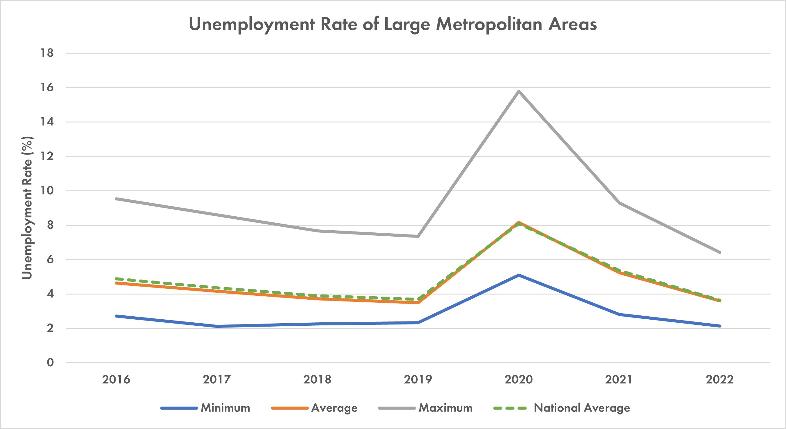

This interactive map shows the average annual unemployment rate for metropolitan areas larger than 1 million people. I retrieved the data from the U.S. Bureau of Labor Statistics. From 2016 to 2019, the overall unemployment rate was decreasing as the economy remained strong. But in 2020, COVID-19 forced the nation into lockdown. Unemployment rates soared across the country. The Las Vegas metro area had the highest rate among large cities, at 15.8%. Its casino resorts shut down as people stopped traveling for pleasure.
As lockdown eased in 2021, the unemployment rate began to fall, reaching pre-COVID levels by 2022. Salt Lake City had the lowest unemployment rate in 2022, at 2.1%.
